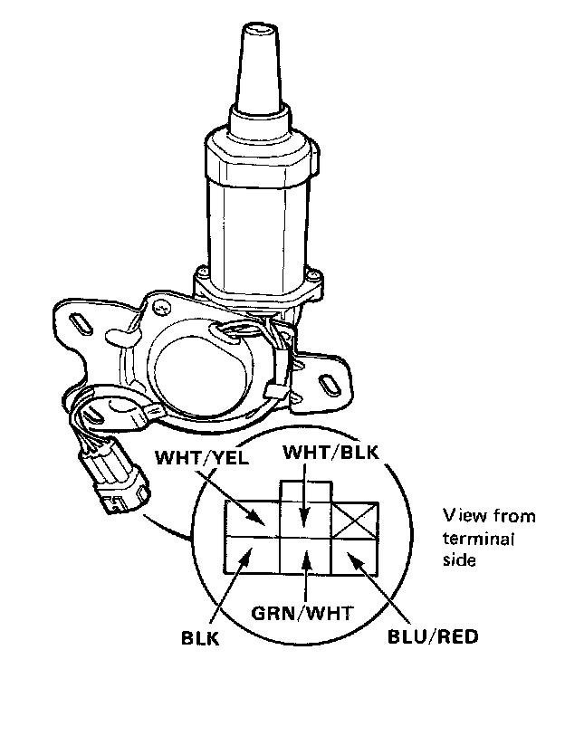

Headlamp Motor: Testing and Inspection
Retractor Motor Test

1. Test the retractor motor by applying battery voltage to the BLU/RED (positive) and BLK(negative) leads. The motor should run continuously. If the motor fails to run smoothly, replace it.
2. Disconnect the power supply and connect ohmmeter probes to the WHT/BLK and GRN/WHT leads, and the WHT/YEL and GRN/WHT leads.
3. Rotate the motor by hand.
4. Ohmmeter should indicate continuity and no continuity repeatedly.
CAUTION: Before installing the motor, remove No.24/No.25 fuse (15A).
Note: Install the cap correctly.